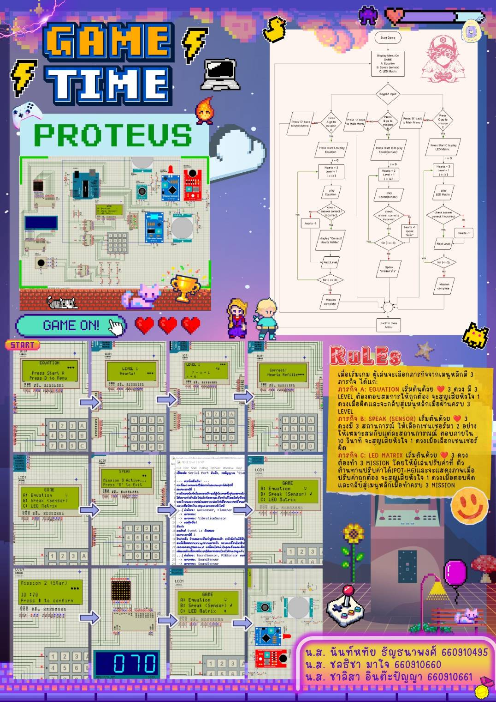
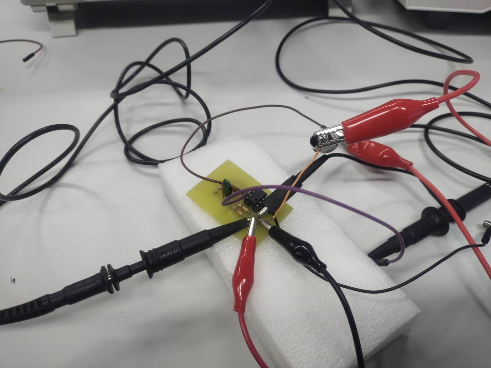
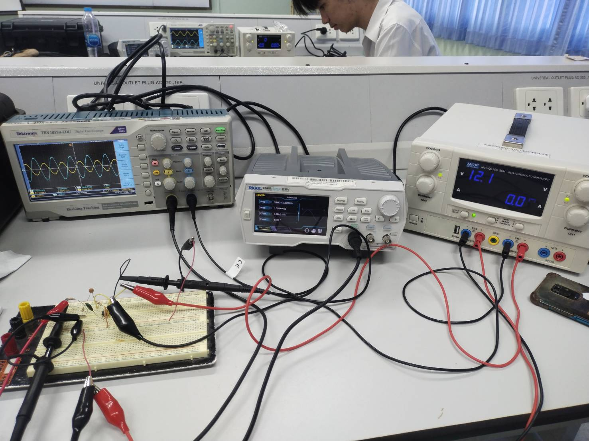

Projects
Arduino Game Project (Proteus Simulation)
Developed a multi-level Arduino-based game using Proteus simulation. Integrated LCD display, keypad input, PIR sensor, 7-segment display, 8×8 LED matrix, and potentiometer. Implemented a heart-based game logic system.
Motion Detection System (Raspberry Pi)
Built a motion detection system using Raspberry Pi 3 Model A+ and PIR sensor for detecting movement and triggering alerts.

Bandpass Filter PCB Project
Participated in PCB fabrication for a Bandpass Filter circuit. Responsible for soldering, assembly, and circuit testing.
 